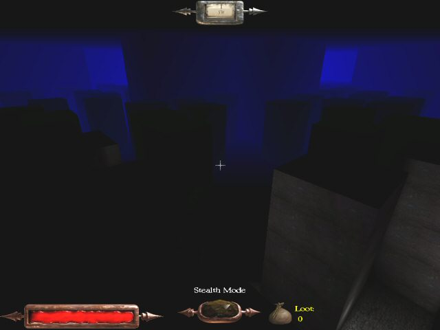
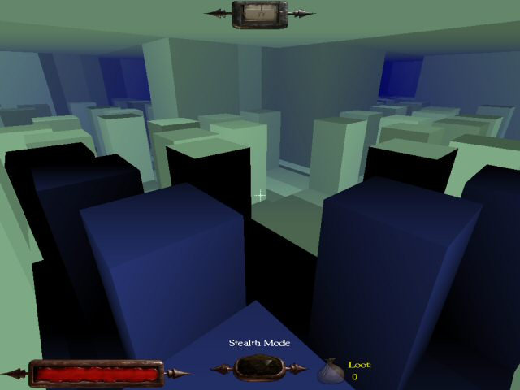
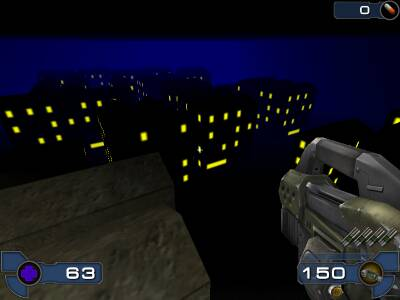
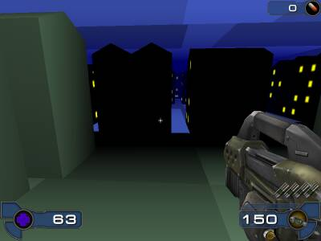
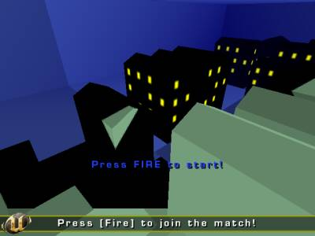
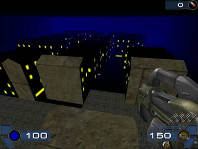

LOD Cheat
Level of Detail Cheat with UT2003's SkyBoxes... Fancy name, eh, but what does it do?
Example
Right. So here's what a big city map could look like. (If you forgot to actually add detail)

Now, let's see what our city would look like... Oh my gosh! Look at that. The n00b has made some completely ridiculous zones in there!

Well, the green zone isn't in fact just any zone. It's the SkyBox. And it surrounds the blue zone because the blue zone has fog in it that cuts off the view at 2000 units.
Explanation
That scene you see up there, was build by slapping some random blocks in a fairly large room. Then, I duplicated the whole room and moved the second one 5000 UUs below the original. I then used inio's ScaledSkyZone? which I found at MultiSkyBox discussion, so that the Sky would move exactly as the player does, thus creating an illusion that the skyzone is the same playing area that surrounds the player.
In order to properly hide the transition between the two zones, the actual playing zone fades to black at 2000 units. Since the sky zone consists of black textures, none will be any wiser. And just so that the buildings could actually be seen from far away, I added a bit of blue fog into the sky zone.
So what's the whole point?
Now, I'm not sure how much of use this will be, but I think that when used properly, it will save a lot of FPS. You see, the buildings in the sky zone are supposed to be very low detail. They don't need any detail because they're quite far away. But since we basically only see 2000 units far, we can add lots and lots of static meshes into the real world zone... all static meshes that are too far away, simply aren't rendered.
Bit of thoughts
The buildings in the sky zone are currently normal geometry with a black texture. I'm thinking static meshes would do the trick better. Also, I'm thinking that instead of simple black textures, I should add nice shiny yellow windows on the textures. Since the textures are unlit, the black parts stay black, but the windows would shine nicely even from further away.
Hm. Apart from probably being more efficient buildings in the SkyBox, static meshes would have another strength. If the SkyBox view goes inside one of those buildings, you can see right out of it. If the buildings are geometry, the whole sky view gets borked.
The Sky view lags a bit. If you go near a buildings corner, and move so that you see the corner and the sky at the same time, you can see the corners of the underlying sky building image. Basically this means that you probably should trim your buildings with static meshes so they're a bit fatter than their low detail counterparts.
I stand corrected: Since SkyBoxes can see into other SkyBoxes, real sky with stars and clouds and all beyond the cityscape is possible.
The ScaledSkyZone is not the same one as in the iono's zip file anymore. I actually didn't bother trying to set its location just right, so I changed its code so it'd think its starting location is (0,0,-5120). In fact, it would be better all around if someone just made a new SkyZoneInfo that has an Offset attribute to begin with. I certainly tried, but there must've been something in the properties I missed. It just refused to move.
Light In The Dark (almost)
I tried to enhance the visual aspects of the map by adding yellow windows into the SkyBox with an unlit texture. The picture on the left shows how cool it looked.
However, I immediately realized its greatest flaw. The bright windows would pop in and out of sight as they player moved or even turned his view. See that black wall the crosshair is pointing at on the second picture? That wall, too, should have those bright yellow windows.
 
I had initially thought of making static meshes that would show similarly unlit bright windows. However, it hadn't occured to me that the fog would make them completely black, too, dependless of their lighting or brightness. After this disappointment, I tried experimenting a bit.
First, I set the fog to start at the same distance as it ended. Result was the image on the left. The polygons did turn black at the correct distance, but they still obscure the view to the SkyBox. I then tried setting the starting distance to 8000 - way past the ending distance - and lo, the polygons would simply cut off at the ending distance.
 
While interesting, I'm not sure if I can find a practical use for this. The actual playing area and the skybox would have to be visually near identical. Furthermore, we lose that fog effect that softens the transition between the real world and the SkyBox.
Maybe if you have a really vast map, you could make the details disappear at such distance that no one would notice. But that would put us back to square one. Not being able to have lots of detail in the actual playing area.
Conclusion
I suppose I'll have to stick to using silhouettes and fog outlining in the SkyBox. I'm out of thoughts when it comes to adding bright spots in there. Suggestions are very welcome.
DeepQantas: Ok, go ahead. Rip it apart. Oh, and if some vet could check the format of Wiki Markup on this page...?
Tarquin:Interesting stuff. I've just added a few links. It might be an idea to create a page for the ScaledSkyZone? script if inio's ok with that then you could add your version there if you like.
Switch: The custom SkyZoneInfo actor may refuse to move if it has bStatic=True in default properties. bStatic is not visible in unrealed's default properties dialog - use 'set myclassname bstatic false' command to change it, then recompile and save the package/map (or use something like wotgreal for programming).
DeepQantas: Added a bit of experimentation notes about those bright windows. Didn't try the custom SkyZone thingie, yet, Switch. Next I think I should actually add those detailed static meshes and see if this thing really helps the performance.